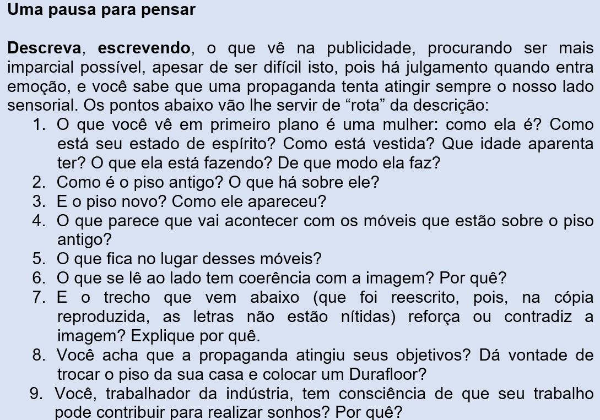

Capítulo 1: Os provérbios e indústria da madeira/mobiliário
Questão-problema:
Diz um provérbio que “mudança de pasto engorda o gado”. Mudar a aparência de sua casa – com piso e móveis novos – fará você mais feliz? Quem trabalha na indústria moveleira tem ideia de que seu trabalho pode contribuir para isso, para essa “felicidade”?
Esta propaganda foi retirada de uma revista de decoração. Abaixo dos pés da garota propaganda está escrito:
“Durafloor tem a mais moderna e completa linha de pisos laminados para deixar o projeto dos seus sonhos ainda mais incrível.
A instalação é rápida e pode ser aplicado sobre outros pisos, sem quebra-quebra. Qualquer ambiente fica muito mais bonito,
moderno e sofisticado com Durafloor. Conheça nossos lançamentos e comece sua reforma com o pé direito.”

Você sabia?
Os provérbios são elementos típicos da cultura de um povo. Mas, o que é cultura?
O que são provérbios?
A questão-problema que encabeça este capítulo inicia com o provérbio “mudança de pasto engorda o gado”. As palavras elas podem ter valor denotativo e conotativo. No valor denotativo, os significados ficam mais fáceis de entender porque o dicionário pode ajudar. No valor conotativo, as palavras significam outras coisas, dependendo do contexto. Levando em consideração o provérbio “mudança de pasto engorda o gado”, este dito é conotativo, podendo significar que mudança de pasto significa “novidade”, “o que está por vir”, “mudar de ares”, e o “engorda o gado” se refere não só a uma “boa saúde” como também à “felicidade”, “o lucro”. Então, provérbios são enunciados – que têm sua origem na Bíblia – cheios de sabedoria humana objetiva e subjetiva. Com o passar dos tempos, os provérbios também viraram ditos populares (frases e expressões) que transmitem conhecimentos comuns e permanentes sobre a vida. Existem provérbios em todas as línguas. Muitos deles foram criados na antiguidade, porém estão relacionados a aspectos universais da vida, por isso são utilizados até nos dias atuais. É muito comum ouvirmos provérbios em situações do cotidiano. Quem nunca ouviu, por exemplo, ao fazer alguma coisa muito rapidamente, ela virá cheia de defeitos, isto é, que “a pressa é a inimiga da perfeição”? Quem nunca ouviu dizer que “devagar se vai ao longe”, isto é, que fazendo as coisas com calma e serenidade sempre, vamos construindo o que queremos? Somos atraídos aos provérbios por causa da lógica que eles nos trazem. A maioria dos provérbios e ditos populares é de criação anônima. São fáceis de decorar e de transmitir em função de seu formato simples, curto e direto. Falam sobre diversos assuntos e fazem parte da cultura popular da humanidade. Encontramos provérbios para praticamente todas as situações de vida.
Os provérbios e a ironia de Chico Buarque
Dizem que a ironia é uma maneira de falar ou de escrever o contrário daquilo que se pensa, deixando entender – de propósito – uma distância entre aquilo que dizemos e aquilo que realmente pensamos. “Parece o reflexo da nossa realidade que, por ser múltipla, é, por si mesma, contrastante”. Na Literatura, a ironia é a arte de gozar com alguém ou com alguma coisa, com vistas a obter uma reação do leitor, ouvinte ou interlocutor. Eu acho que é isso que o Chico Buarque fez quando escreveu inversões de provérbios famosos na canção “Bom Conselho”.
Ouça estas canções:
Bom conselho
(Chico Buarque)
Ouça um bom conselho
Que eu lhe dou de graça:
Inútil dormir
Que a dor não passa.
Espere sentado
Ou você se cansa
Está provado
Quem espera nunca alcança
Venha, meu amigo,
Deixe esse regaço,
Brinque com meu fogo,
Venha se queimar.
Faça como eu digo,
Faça como eu faço:
Aja duas vezes
Antes de pensar.
Vou atrás do tempo,
Vim de não sei onde,
Devagar é que
Não se vai longe.
Eu semeio o vento
Na minha cidade,
Vou pra rua
E bebo a tempestade
O tempo presente nos provérbios e ditos populares
Leia novamente, se achar necessário, os ditos apresentados e observe que os verbos que neles aparecem, em sua grande
maioria, estão no tempo presente do modo indicativo. Exemplos: “Quem espera sempre alcança”. “As paredes têm ouvidos”. “Não se faz omelete sem quebrar os ovos”.
Por que isso acontece?
Em primeiro lugar, a maneira, o modo como os verbos no indicativo se apresentam querem expressar suas ações ou estados na sua realidade, na sua “certeza”.
O tempo presente vai ser usado, também, para indicar ações ou estados permanentes, tais como uma verdade científica (A Terra gira em torno do Sol), um artigo de lei (Todo homem é igual perante a lei), um dogma religioso (Deus é onipotente e onisciente). Lembre-se de que os provérbios transmitem conhecimentos comuns e permanentes sobre a vida e sobre a conduta humana.
Quando um dito popular enuncia que “mais vale um pássaro na mão do que dois voando”, está afirmando que é sempre melhor termos pouca coisa do que não termos nada, considerando isso um princípio de vida (mesmo havendo gente que não concorde com a afirmação).
Porém, o tempo presente também é usado:
1. Para enunciar um fato atual, que ocorre no momento em que se fala. Um exemplo fácil: um radialista descrevendo no momento uma partida de futebol: “Neymar passa para Messi, que domina a bola e atira no gol!”
2. Para expressar uma característica de algo ou alguém. Ex: Eu sou tímido. Tenho medo ou fico envergonhado de enfrentar plateias.
3. Para dar vivacidade a fatos acontecidos no passado (presente histórico ou narrativo). Ex: No dia do casamento de Don Pedro I com a princesa Leopoldina, as ruas da cidade do Rio de Janeiro amanhecem enfeitadas, mas tudo feito de papel.
4. Para marcar um fato futuro, mas próximo. Ex: Amanhã eu vou para Santa Catarina.
Esses são exemplos do presente do indicativo dos verbos regulares das três conjugações. Eles apareceram assim, no quadro acima, com as terminações separadas, para mostrar
que a primeira parte é o radical de cada verbo regular. Qualquer alteração que aconteça ali NO RADICAL, o verbo passa a ser irregular.
Ex: o verbo “dormir” é irregular, pois no presente do indicativo, APARECE UMA PEQUENÍSSIMA ALTERAÇÃO, conjuga-se “eu durmo”.
Verbos e Conjugações Verbais
Praticando - Reflexão e ação
1. A seguir, apresentamos uma grande lista de provérbios. Escolha 10 deles e explique, escrevendo, o que significam estes ditos populares:
1. Dar a César o que é de César e a Deus o que é de Deus.
2. Quem com ferro fere, com ferro será ferido.
3. Mais vale um pássaro na mão do que dois voando.
4. A pressa é a inimiga da perfeição.
5. Cavalo dado não se olha os dentes.
6. A ocasião faz o ladrão.
7. A mentira tem perna a perna curta.
8. Quando um não quer, dois não brigam.
9. Gato escaldado tem medo de água fria.
10. Papagaio come milho, periquito leva a fama.
11. Cavalo que voa não quer espora.
12. A necessidade é a mãe das invenções.
13. Para bom entendedor, meia palavra basta.
14. Águas passadas não movem moinhos.
15. Macaco velho não pula em galho seco.
16. O boi engorda é com o olhar do dono.
17. Criou fama e deitou na cama.
18. A morte não chega de véspera.
19. Antes calar que mal falar.
20. Quem quer faz, quem não quer manda.
21. Água mole em pedra dura, tanto bate até que fura.
22. Cada cabeça, cada sentença.
23. Cachorro que late não morde.
24. Quem tem boca vai a Roma.
25. Quem vê a barba do vizinho arder põe a sua de molho.
26. Quem usa cuida.
27. Deus ajuda quem cedo madruga.
28. Caiu na rede é peixe.
29. Casa de ferreiro, espeto de pau.
30. O seguro morreu de velho.
31. Cada macaco no seu galho.
32. Quem tudo quer nada tem.
33. Devagar se vai ao longe.
34. De grão em grão a galinha enche o papo.
35. Quanto mais alto se sobe, maior é a queda.
36. Falar é fácil, fazer é que é difícil.
37. Filho de peixe, peixinho é.
38. Leite de vaca não mata bezerro.
39. Nada como um dia depois do outro.
40. Faça o que digo e não faça o que faço.
41. Não se faz uma omelete sem quebrar os ovos.
42. Nunca digas que desta água não beberás.
43. Pense duas vezes antes de agir.
44. Onde há fumaça, há fogo.
45. Pela boca morre o peixe.
46. Quem ama o feio, bonito lhe parece.
47. Quem espera sempre alcança.
48. As paredes têm ouvidos.
49. Fazer um bicho de sete cabeças.
50. Não vá comprar gato por lebre.
2. Há, na lista de provérbios do exercício anterior, alguns que não têm verbo. Escolha para cada enunciado um verbo condizente com o pensamento que querem transmitir:
1. Cada cabeça, cada sentença.
2. Casa de ferreiro, espeto de pau.
3. Cada macaco no seu galho.
4. Nada como um dia depois do outro.
O que aprendi:
- Esmiuçar uma publicidade facilita sua análise de conteúdo e o objetivo para o qual ela foi criada.
- O que são provérbios: têm sua origem na bíblia e são textos cheios de sabedoria. Hoje os provérbios viraram ditos populares que transmitem conhecimentos comuns e permanentes sobre a vida. Têm significado conotativo.
- Os verbos que aparecem nos provérbios têm seu tempo, na sua maioria, no presente do indicativo; são enunciados que até hoje permanecem na visão de mundo do povo.
- Podemos saber se os verbos são regulares ou irregulares já no presente do indicativo. Os verbos regulares conservam intactos seus radicais. Os verbos irregulares vão mostrar alterações no seu radical, mesmo que seja só uma mudança de letra.